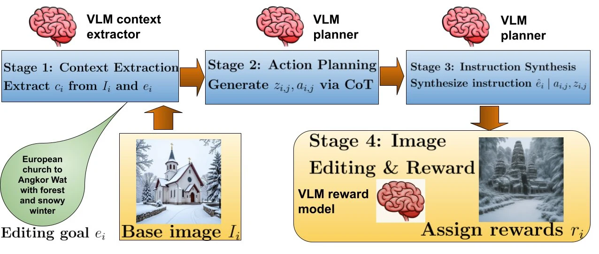
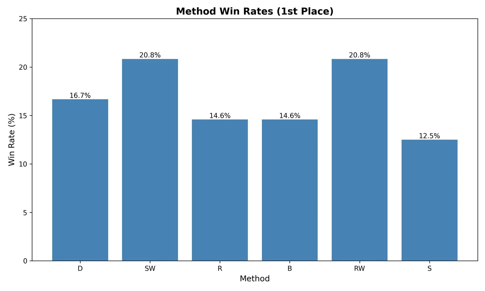
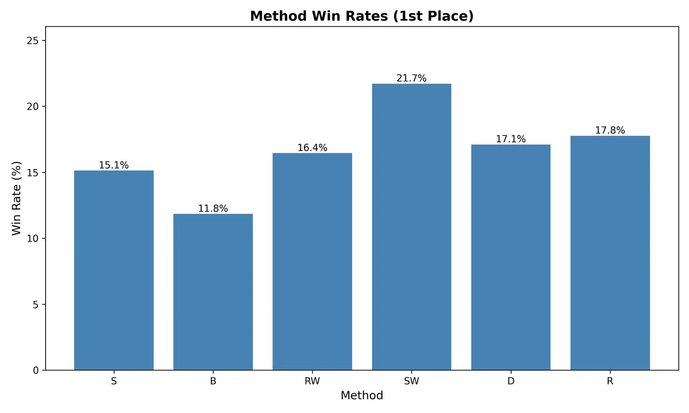
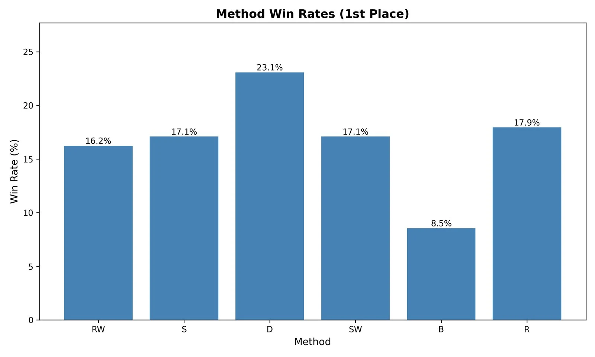

Abstract
Our work demonstrates that structured planning with reward-aware training enables models to produce higher-quality images that better follow user instructions compared to direct editing approaches. Comprehensive evaluation on Qwen3-VL 4B/8B shows our compact open-source planners outperform GPT-4o and Gemini 2.5 zero-shot baseline planners on the majority of tasks, confirmed by human evaluation.
Interactive Explorer
Pick a scene and a method. Every example is a real planner output from the paper; the prompt is the instruction the planner received.
Show the full 10-way comparison strip
Gallery
Edits by our SW and RW planners. Hover (or tap) a card to see the original.
Method
Tool-based planning
A library of orthogonal primitives (time of day, artistic medium, mood lighting, ...) composes complex edits as 2–5 step plans.
Reasoning per step
Structured context encodes the image's current state, and the planner explains each tool choice before calling it.
Reward-weighted offline RL
RW weights trajectories by quality score. SW adds z-score normalization for stability across reward distributions.
Click a stage of the data-generation pipeline.

Reasoning Beats Direct Editing
Original, direct-edit baseline, the dataset's ground-truth target, and our SW planner.
The Dataset
Three tiers of image-styling trajectories, each with image analysis, tool plans, reasoning chains, edited images, and multi-dimensional reward scores. All images are generated with HiDream-I1-Dev. MIT license.
1–2 step atomic edits, 10 actions, 31 locations.
3–5 step compositional edits with constraints, 20 actions, 10 interior-design themes.
Multi-dimension edits with integrated constraints, 30 actions, 83 diverse themes.
Before and after, straight from the data
Browse the dataset on Hugging FaceResults
Overall image score (0–100) from three LLM judges. Pick a dataset, planner configuration, and judge.
B baseline, E Edit-Only, S Standard, R RL, RW / SW our reward-weighted methods, D DPO. GPT-4o and Gemini 2.5 are zero-shot reference planners. Triple-judge agreement subsets where feasible; see the paper.
Human evaluation



BibTeX
@article{mukherjee2026agentic,
title = {Agentic Planning with Reasoning for Image Styling via Offline RL},
author = {Mukherjee, Subhojyoti and Petrangeli, Stefano and Kveton, Branislav and Bui, Trung and Dernoncourt, Franck and Mukherjee, Arko},
journal = {arXiv preprint arXiv:2603.07148},
year = {2026}
}